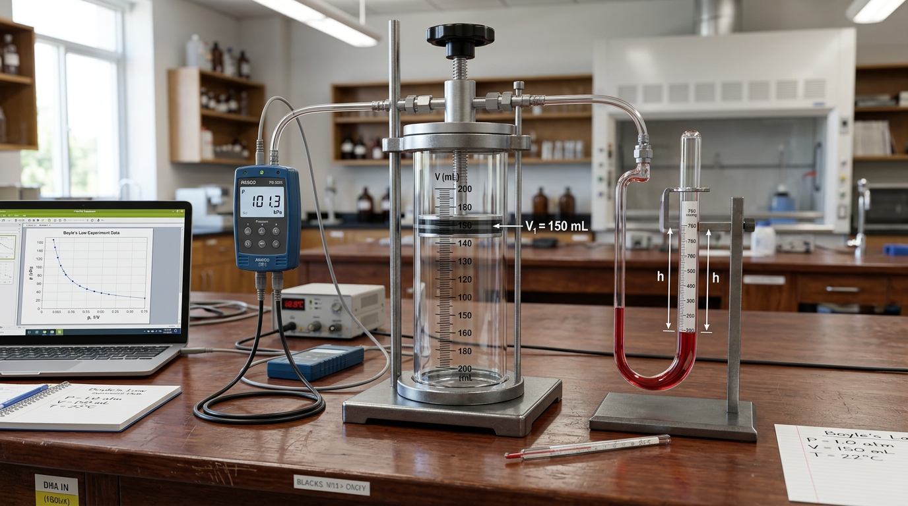

Bài 9: Định Luật Boyle - Quá Trình Đẳng Nhiệt

Mô phỏng thực nghiệm: Xilanh nén khí kín kết hợp áp kế cảm biến đo áp suất p và thể tích V
NỘI DUNG BÀI HỌC
1. Trạng Thái Và Các Đẳng Quá Trình Chất Khí
Trạng thái của một khối lượng khí xác định được mô tả đầy đủ bởi 3 thông số trạng thái: Áp suất ($p$), Thể tích ($V$) và Nhiệt độ tuyệt đối ($T$). Khi một trong 3 thông số này thay đổi thì khối khí chuyển sang một trạng thái mới (gọi là quá trình biến đổi trạng thái).
Là quá trình biến đổi trạng thái của một lượng khí xác định trong đó nhiệt độ $T$ được giữ không đổi ($T = \text{const}$).
Bao gồm Quá trình đẳng tích (giữ thể tích $V$ không đổi) và Quá trình đẳng áp (giữ áp suất $p$ không đổi).
2. Định Luật Boyle ($p \cdot V = \text{const}$)
Năm 1662, Robert Boyle tiến hành các thí nghiệm tỉ mỉ với cột khí trong ống thủy tinh chữ U và rút ra phát biểu định luật nền tảng:
Thí Nghiệm Lịch Sử Ống Thủy Tinh Chữ U (Robert Boyle - 1662)
Bọc khí bằng cột thủy ngânPhương pháp thí nghiệm: Robert Boyle rót thủy ngân vào chiếc ống thủy tinh hình chữ U có một đầu bị bọc kín, giam một cột không khí cố định ở đầu ngắn.
Kết quả quan sát: Khi tiếp tục rót thêm thủy ngân làm chiều cao cột thủy ngân tăng gấp 2 lần, thể tích $V$ của cột khí bị nén giảm đi đúng 2 lần. Tích số giữa áp suất tổng cộng $p$ và thể tích $V$ luôn giữ nguyên giá trị không đổi ($p \cdot V = \text{const}$).
Đối với một lượng khí xác định, ở nhiệt độ không đổi, áp suất $p$ tỉ lệ nghịch với thể tích $V$ của khối khí.
Khi khối khí chuyển từ trạng thái 1 $(p_1, V_1, T)$ sang trạng thái 2 $(p_2, V_2, T)$ ở nhiệt độ không đổi, biểu thức liên hệ là:
3. Thí Nghiệm Kiểm Chứng Định Luật Boyle
Để kiểm chứng định luật Boyle trong phòng thực hành, ta sử dụng một xilanh tinh thể chia độ chứa khí kín kết hợp pít-tông di chuyển chậm rãi (để khí kịp trao đổi nhiệt với môi trường giữ $T = \text{const}$) và áp kế hiện số hiển thị áp suất $p$.
PHÒNG THÍ NGHIỆM ẢO 3D: KHẢO SÁT ĐỊNH LUẬT BOYLE
Tương tác 3D💡 Hướng dẫn: Kéo pít-tông trực tiếp trên màn hình 3D để quan sát thể tích V thay đổi và áp suất p tự động tính toán theo thời gian thực.
4. Đường Đẳng Nhiệt Hypebol & Giải Thích Vi Mô
Đường biểu diễn sự biến thiên của áp suất $p$ theo thể tích $V$ khi nhiệt độ $T$ giữ không đổi gọi là đường đẳng nhiệt.
Đồ thị đường đẳng nhiệt Hypebol dốc xuống trong hệ tọa độ (p, V): Đường đẳng nhiệt ở nhiệt độ T2 > T1 nằm phía trên đường T1
Trong hệ tọa độ $(p, V)$, đường đẳng nhiệt có dạng một nhánh của đường hypebol. Khối khí ở nhiệt độ cao hơn ($T_2 > T_1$) có đường đẳng nhiệt nằm ở phía trên xa gốc tọa độ hơn.
Ở nhiệt độ không đổi, tốc độ trung bình của các phân tử khí không đổi. Khi nén thể tích $V$ giảm đi bao nhiêu lần, mật độ phân tử khí $n$ tăng lên bấy nhiêu lần $\rightarrow$ số va chạm phân tử vào thành bình trong 1 giây tăng bấy nhiêu lần $\rightarrow$ áp suất $p$ tăng bấy nhiêu lần.
📌 Quá trình đẳng nhiệt: Là quá trình biến đổi trạng thái của một lượng khí xác định ở nhiệt độ tuyệt đối $T$ không đổi.
📌 Định luật Boyle: Áp suất $p$ tỉ lệ nghịch với thể tích $V$: $p \cdot V = \text{const}$ hay $p_1 \cdot V_1 = p_2 \cdot V_2$.
📌 Đường đẳng nhiệt: Trong hệ $(p, V)$ có dạng đường hypebol dốc xuống. Nhiệt độ $T_2 > T_1$ thì đường đẳng nhiệt $T_2$ nằm phía trên $T_1$.
📌 Nguyên nhân vi mô: Thể tích $V$ giảm $\rightarrow$ mật độ phân tử $n$ tăng $\rightarrow$ tần suất va chạm phân tử vào thành bình tăng $\rightarrow$ áp suất $p$ tăng.